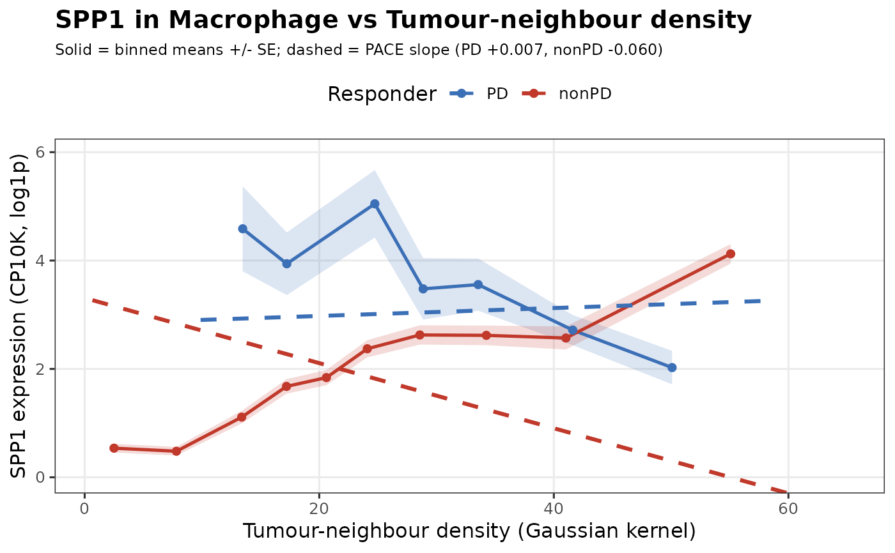

Population view of one gene in focal cells against neighbour density,
split by the fit's condition. The solid line and ribbon are binned means and
standard errors of the observed data; the dashed line is the PACE slope read
straight from the fitted model, anchored at each arm's data centroid. It is
the model's estimate drawn over the data, not a smoother refitted to it.
Usage
plotResponseCurve(
object,
spe,
gene,
focal,
neighbour,
n_bins = 10,
min_bin_n = 10,
colours = c("#3B6FB6", "#C0392B")
)Arguments
- object
A PACEFit fitted with a
condition_col.- spe
The SpatialExperiment::SpatialExperiment that was fitted.
- gene, focal, neighbour
Gene, focal cell type and neighbour cell type.
- n_bins
Number of density quantile bins (default 10).
- min_bin_n
Bins with fewer focal cells than this are dropped.
- colours
Colours for the two arms.
Examples
spe <- readRDS(system.file("extdata", "mel_cosmx_subset.rds", package = "PACE"))
# \donttest{
fit <- paceFit(spe, celltype_col = "cellType", condition_col = "Responder",
image_col = "image", kernel_per_image = TRUE,
image_re = "intercept", verbose = FALSE)
#> - Computing 180 x 298 likelihood matrix.
#> - Likelihood calculations took 0.04 seconds.
#> - Fitting model with 298 mixture components.
#> - Model fitting took 0.14 seconds.
#> - Computing posterior matrices.
#> - Computation allocated took 0.00 seconds.
#> [mashr] ResponderPD:B_Cell: 180 genes shrunk; sig (lfsr<0.05) = 0
#> - Computing 180 x 375 likelihood matrix.
#> - Likelihood calculations took 0.05 seconds.
#> - Fitting model with 375 mixture components.
#> - Model fitting took 0.29 seconds.
#> - Computing posterior matrices.
#> - Computation allocated took 0.00 seconds.
#> - Computing 180 x 579 likelihood matrix.
#> - Likelihood calculations took 0.07 seconds.
#> - Fitting model with 579 mixture components.
#> - Model fitting took 0.54 seconds.
#> - Computing posterior matrices.
#> - Computation allocated took 0.00 seconds.
#> [mashr] ResponderPD:Endothelial: 180 genes shrunk; sig (lfsr<0.05) = 24
#> - Computing 180 x 364 likelihood matrix.
#> - Likelihood calculations took 0.05 seconds.
#> - Fitting model with 364 mixture components.
#> - Model fitting took 0.22 seconds.
#> - Computing posterior matrices.
#> - Computation allocated took 0.00 seconds.
#> [mashr] ResponderPD:Fibroblast: 180 genes shrunk; sig (lfsr<0.05) = 1
#> - Computing 180 x 243 likelihood matrix.
#> - Likelihood calculations took 0.03 seconds.
#> - Fitting model with 243 mixture components.
#> - Model fitting took 0.13 seconds.
#> - Computing posterior matrices.
#> - Computation allocated took 0.00 seconds.
#> - Computing 180 x 375 likelihood matrix.
#> - Likelihood calculations took 0.05 seconds.
#> - Fitting model with 375 mixture components.
#> - Model fitting took 0.31 seconds.
#> - Computing posterior matrices.
#> - Computation allocated took 0.00 seconds.
#> [mashr] ResponderPD:Macrophage: 180 genes shrunk; sig (lfsr<0.05) = 13
#> - Computing 180 x 364 likelihood matrix.
#> - Likelihood calculations took 0.05 seconds.
#> - Fitting model with 364 mixture components.
#> - Model fitting took 0.09 seconds.
#> - Computing posterior matrices.
#> - Computation allocated took 0.00 seconds.
#> - Computing 180 x 562 likelihood matrix.
#> - Likelihood calculations took 0.07 seconds.
#> - Fitting model with 562 mixture components.
#> - Model fitting took 0.15 seconds.
#> - Computing posterior matrices.
#> - Computation allocated took 0.00 seconds.
#> [mashr] ResponderPD:T_Cell: 180 genes shrunk; sig (lfsr<0.05) = 13
#> - Computing 180 x 265 likelihood matrix.
#> - Likelihood calculations took 0.03 seconds.
#> - Fitting model with 265 mixture components.
#> - Model fitting took 0.23 seconds.
#> - Computing posterior matrices.
#> - Computation allocated took 0.00 seconds.
#> - Computing 180 x 409 likelihood matrix.
#> - Likelihood calculations took 0.05 seconds.
#> - Fitting model with 409 mixture components.
#> - Model fitting took 0.61 seconds.
#> - Computing posterior matrices.
#> - Computation allocated took 0.00 seconds.
#> [mashr] ResponderPD:Tumour: 180 genes shrunk; sig (lfsr<0.05) = 25
plotResponseCurve(fit, spe, "SPP1", "Macrophage", "Tumour")

# }